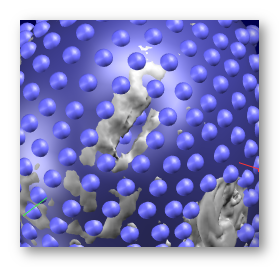

Electrodes Coregistration to MRI
This toolbox helps the user to interactively coregister electrodes on a full head MRI . This is usually a required step before building inverse matrices .
Electrodes Coregistration Dialog
Technical points & hints
Actions
Glueing electrodes
Recommended sequence for coregistration
Results
Electrodes Coregistration Dialog
Called from the Tools | Electrodes Coordinates and Solution Points | Coregistering Electrodes to MRI Head menu, the following dialog appears:
|
Presets |
There are currently only 2 presets:
|
|
Input Files |
|
|
Source XYZ file: |
The electrodes coordinates file to be coregistered. |
|
Target MRI Head file: |
The target MRI. |
|
Once everything is opened up, you can start to geometrical update the electrodes geometry with these actions: |
|
|
Rescale |
Rescales the X, Y or Z axis, or all of them (Global). |
|
Translate |
Translates in the X, Y or Z axis. |
|
Rotate |
Rotates the X, Y or Z axis. |
|
Magic |
Glueing the electrodes onto the scalp surface. |
|
|
|
|
Undo Last |
Goes one step backward into the history of transforms. |
|
Redo Last |
Goes one step forward into the history of transforms. |
|
Undo All |
Undo all. Note that the history is still available , so you can move forward again if you wish... |
|
Redo All |
Redo all. |
|
Clear All |
Undo all then erase all history. Guess you have to be a little cautious before doing that, don't you? |
|
Output |
|
|
Output Base File Prefix: |
Directory and prefix used for all output files. |
Electrodes Coregistration - Technical points & hints
Actions
Axis considerations
Before applying a transform step, you have to pay attention toward which directions the X, Y and Z axis are pointing to . On any display, the X axis is colored red, the Y axis, green and the Z axis, blue.
For the usual 'RAS' orientation case (or MNI orientation), we have:
- X pointing toward the Right side
- Y pointing toward the Anterior part
- Z pointing toward the Superior part
Most actions need an axis specified to be performed. F.ex. you can Rotate around the X axis (RX) or Translate in the Y axis (TY) . En plus of the axis, the direction of the action should be specified, like Translate Y forward (TY+) or Translate Y backward (TY-). Hence the axis + sign butons. Just try and see, in any case you can always undo your last step!
Actions considerations
- Rescaling is equivalent to "stretching" or "compressing"; translating to shifting position; and rotating to turning around.
-
The way the toolbox works is by applying
small incremental
transforms
, one at a time.
The increment will be small if you click sporadically on a button, and will increase with faster presses. - The Glueing action is definitely appart from all the other operations, for many reasons. First it is a non-linear operation (and can not be represented in a 4x4 homegenous transform). Second, it is very radical and is best done at the very end of the coregistration.
- You can undo and redo any number of steps to assert your whole transform (or if you are a little bit geeky and enjoy tiny pleasures like the replay).
Glueing electrodes
Glueing the electrodes on the surface projects them to the closest point on the surface of the scalp . This forces the electrodes to have the exact shape of the head , and the exact distances to the brain, which is a good thing when computing Inverse Matices .
Glueing can also save the day, too, by un-spherizing a spherical template electrodes set back to a real head shape. However, note that this is still an approximation: it is quite unlikely that the un-spherization function used here will perfectly revert the spherization function used on the first hand! So you can end up with some geometrical distortions that can bias all your inverse solutions !
One solution to this problem would be to compute a real template of your electrodes set. Un-spherize only if you can not do otherwise!
Glueing might not be a good idea, if your electrodes set covers the neck / jaws, but the target MRI has been clipped at ear / cerebellum level. That is, your electrodes set have a wider coverage than the available MRI . The electrodes below the missing part of the MRI will be simply rescaled, so you could end up with a sort of discontinuity at the border. Visually check this, it can be either tolerable or a disaster, this is up to you at this point...
Glueing shouldn't be done if the MRI appears to have some sorts of holes on the surface, for whatever reasons (MRI artifact, or a real hole in the head...). Should this be the case, the "glued" electrodes could end up inside the head, which is a real concern for the inverse solutions, to say the least! In this case, simply adjust as much as you can with translations / rotations / scalings and avoid the glueing step.
An example of a real electrodes set successfully glued to its corresponding real head, best case scenario:
An example of spherical electrodes set successfully glued to a real head , not ideal but should work:
An example of spherical electrodes set successfully glued to a template head (MNI), not ideal but should work: :
An example of spherical electrodes set potentially problematic due to the electrodes floating in the air below the MRI cut, try to avoid :
An example of a real electrodes set with a corrupted MRI (irregular surface), before and after gluing, showing some electrodes landed inside the head, so avoid gluing here:

Recommended sequence for coregistration
Your MRI should be correctly oriented & origin properly set before performing any coregistration! Re-align & set the origin beforehand if needed.
Once the dialog is all set and the display opens up, here is what a typical sequence of operations looks like:
|
Starting from the initial guess of Cartool (centering, scaling) We are going to work only on the side view for the moment |
|
|
Translation Y- (back) |
|
|
|
Translation Z- (down) |
|
|
Global rescaling (shrinking) It might be necessary to repeat the last 3 steps - or not |
|
|
Rotation X- |
|
|
Translation Z- |
|
|
Rotation X+ |
|
|
Turning display now & checking the electrodes now around the eyes |
|
|
Rotation X+ Now that we see the face, we can adjust the rotation. Don't forget that eyebrows can not be seen on the MRI and that you certainly didn't put electrodes on them! |
|
|
Turning display & checking around the ears |
|
|
Scale Z+ (expand top-down) |
|
Scale Y- (shrink front-back) |
|
|
Checking left-right |
|
|
Scale X+ (expand left-right) Tiny adjustment here |
|
|
Final check? |
|
|
Glueing electrodes! This should be done at the end only, although you can try during the whole process to guess how the projected electrodes are going to land. |

A few comments:
- No X (left-right) translation, nor Y rotation, nor Z rotation were ever needed during the coregistration! This is due to the fact that both the MRI and the electrodes (should) have been optimally re-centered , which sets these 3 parameters. You should not have to adjust these in most cases. It could be necessary for non-aligned input MRIs.
- Check that the glueing does not send any electrodes in bad places: inside the head, inside a cavity, or even on the ear - anything geometrically non-realistic. Try tiny adjustments while remaining "glued" to fix the problem. If this does not help, either plainly give up on the glueing part, or apply the glueing and edit manually the faulty electrodes once the file has been saved.
- If the head has been clipped quite high and the parts below the nose level is missing (MNI template, we look at you), Cartool will normally skip the glueing below this "guillotine" limit. Again, try your best without the glueing for these electrodes, glue and check the whole electrode setup looks reasonable .
- As can be seen on the sequence above, the full 257 electrodes were being coregistered . Although we might use a subset later, like 204 electrodes, using all the geometrical information available improves the reliability of the coregistration . It is quite easy to remove the few useless electrodes after the coregistration.
- Consider taking a picture of the subjects with the net on. Using these pictures could help a lot building individual models, especially if different people are involved during the recording and the modelling. By experience, peoples / labs have a tendency to set the electrodes a tiny bit differently, so having actual visual cues will definitely help. This applies even more so when dealing with animals recording / models .
Electrodes Coregistration - Results
Coregistering generates the following output files:
-
All files will start with the provided output base file name, including directory part;
-
A .xyz file for the coregistered electrodes;
-
A .vrb verbose file.